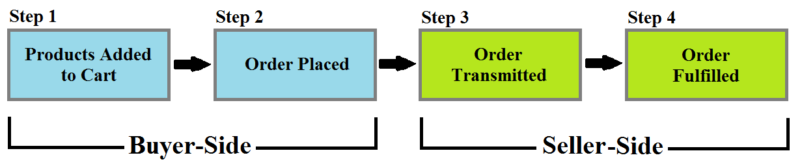

Order Life Cycle¶
An Order stores data regarding a potential or past transaction. This article provides an overview of the order life cycle from open cart to fulfilled order.

Figure 1. Order Life Cycle
Step 1: Products Added to Cart¶
A new order is created when a buyer places products into the cart. At this starting point, the data stored in the order includes the identity and quantity of the products, as well as the account which created it.
Step 2: Order Placed¶
After providing information – such as shipping address and payment method – to the seller and viewing an order summary, the buyer places the order.
Step 3: Order Transmitted¶
When the seller advances an order from pending to transmitted, the order is sent to an external system, such as Microsoft’s Dynamics GP, Oracle’s NetSuite, or SAP.
Step 4: Order Fulfilled¶
The seller completes the remaining steps to deliver the ordered products to the buyer. Additional information can be added to the order, such as an updated order status, shipping information, and estimated arrival time.
Additional Information¶
Note 1: Order Workflows may be implemented that alter or add additional steps to the workflow outlined above.
- Orders Menu
- Order Information
- Order Workflows
- Order Management Statuses
- Advancing an Order to Transmitted
- Enabling Order Workflows
- Approving/Rejecting Orders in Order Workflows